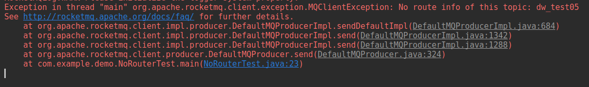
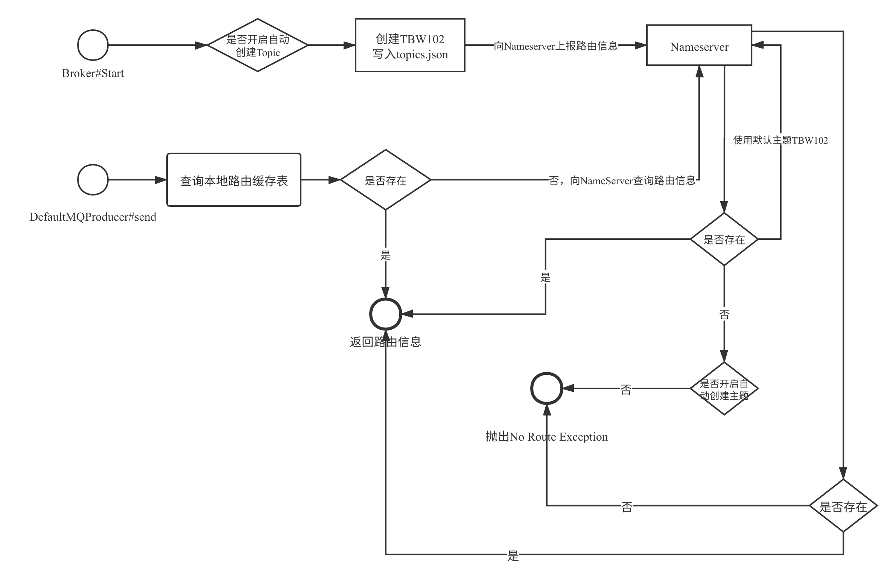
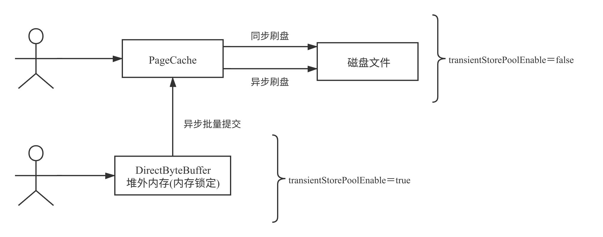

- 01 搭建学习环境准备篇.md.html
- 02 RocketMQ 核心概念扫盲篇.md.html
- 03 消息发送 API 详解与版本变迁说明.md.html
- 04 结合实际应用场景谈消息发送.md.html
- 05 消息发送核心参数与工作原理详解.md.html
- 06 消息发送常见错误与解决方案.md.html
- 07 事务消息使用及方案选型思考.md.html
- 08 消息消费 API 与版本变迁说明.md.html
- 09 DefaultMQPushConsumer 核心参数与工作原理.md.html
- 10 DefaultMQPushConsumer 使用示例与注意事项.md.html
- 11 DefaultLitePullConsumer 核心参数与实战.md.html
- 12 结合实际场景再聊 DefaultLitePullConsumer 的使用.md.html
- 13 结合实际场景顺序消费、消息过滤实战.md.html
- 14 消息消费积压问题排查实战.md.html
- 15 RocketMQ 常用命令实战.md.html
- 16 RocketMQ 集群性能摸高.md.html
- 17 RocketMQ 集群性能调优.md.html
- 18 RocketMQ 集群平滑运维.md.html
- 19 RocketMQ 集群监控（一）.md.html
- 20 RocketMQ 集群监控（二）.md.html
- 21 RocketMQ 集群告警.md.html
- 22 RocketMQ 集群踩坑记.md.html
- 23 消息轨迹、ACL 与多副本搭建.md.html
- 24 RocketMQ-Console 常用页面指标获取逻辑.md.html
- 25 RocketMQ Nameserver 背后的设计理念.md.html
- 26 Java 并发编程实战.md.html
- 27 从 RocketMQ 学基于文件的编程模式（一）.md.html
- 28 从 RocketMQ 学基于文件的编程模式（二）.md.html
- 29 从 RocketMQ 学 Netty 网络编程技巧.md.html
- 30 RocketMQ 学习方法之我见.md.html
- 捐赠
06 消息发送常见错误与解决方案
本篇将结合自己使用 RocketMQ 的经验，对消息发送常见的问题进行分享，基本会遵循出现问题，分析问题、解决问题。
No route info of this topic
无法找到路由信息，其完整的错误堆栈信息如下：

而且很多读者朋友会说，Broker 端开启了自动创建主题也会出现上述问题。
RocketMQ 的路由寻找流程如下图所示：

上面的核心关键点如下：
- 如果 Broker 开启了自动创建 Topic，在启动的时候会默认创建主题 TBW102，并会随着 Broker 发送到 NameServer 的心跳包汇报给 NameServer，继而从 NameServer 查询路由信息时能返回路由信息。
- 消息发送者在消息发送时首先会查本地缓存，如果本地缓存中存在，直接返回路由信息。
- 如果缓存不存在，则向 NameServer 查询路由信息，如果 NameServer 存在该路由信息，就直接返回。
- 如果 NameServer 不存在该 Topic 的路由信息，如果没有开启自动创建主题，则抛出
No route info of this topic。 - 如果开启了自动创建主题，则使用默认主题向 NameServer 查询路由信息，并使用默认 Topic 的路由信息为自己的路由信息，将不会抛出
No route info of this topic。
通常情况下 No route info of this topic 这个错误一般是在刚搭建 RocketMQ、刚入门 RocketMQ 遇到的比较多。通常的排查思路如下。
- 可以通过 RocketMQ-Console 查询路由信息是否存在，或使用如下命令查询路由信息：
cd ${ROCKETMQ_HOME}/bin
sh ./mqadmin topicRoute -n 127.0.0.1:9876 -t dw_test_0003
其输出结果如下所示：

如果通过命令无法查询到路由信息，则查看 Broker 是否开启了自动创建 Topic，参数为 autoCreateTopicEnable，该参数默认为 true。但在生产环境不建议开启。
如果开启了自动创建路由信息，但还是抛出这个错误，这个时候请检查客户端（Producer）连接的 NameServer 地址是否与 Broker 中配置的 NameServer 地址是否一致。
经过上面的步骤，基本就能解决该错误。
消息发送超时
消息发送超时，通常客户端的日志如下：

客户端报消息发送超时，通常第一怀疑的对象是 RocketMQ 服务器，是不是 Broker 性能出现了抖动，无法抗住当前的量。
那我们如何来排查 RocketMQ 当前是否有性能瓶颈呢？
首先我们执行如下命令查看 RocketMQ 消息写入的耗时分布情况：
cd /${USER.HOME}/logs/rocketmqlogs/
grep -n 'PAGECACHERT' store.log | more
输出结果如下所示：

RocketMQ 会每一分钟打印前一分钟内消息发送的耗时情况分布，我们从这里就能窥探 RocketMQ 消息写入是否存在明细的性能瓶颈，其区间如下：
- [<=0ms] 小于 0ms，即微妙级别的
- [0~10ms] 小于 10ms 的个数
- [10~50ms] 大于 10ms 小于 50ms 的个数
其他区间显示，绝大多数会落在微妙级别完成，按照笔者的经验如果 100~200ms 及以上的区间超过 20 个后，说明 Broker 确实存在一定的瓶颈，如果只是少数几个，说明这个是内存或 PageCache 的抖动，问题不大。
通常情况下超时通常与 Broker 端的处理能力关系不大，还有另外一个佐证，在 RocketMQ broker 中还存在快速失败机制，即当 Broker 收到客户端的请求后会将消息先放入队列，然后顺序执行，如果一条消息队列中等待超过 200ms 就会启动快速失败，向客户端返回 [TIMEOUT_CLEAN_QUEUE]broker busy，这个在本专栏的第 3 部分会详细介绍。
在 RocketMQ 客户端遇到网络超时，通常可以考虑一些应用本身的垃圾回收，是否由于 GC 的停顿时间导致的消息发送超时，这个我在测试环境进行压力测试时遇到过，但生产环境暂时没有遇到过，大家稍微留意一下。
在 RocketMQ 中通常遇到网络超时，通常与网络的抖动有关系，但由于我对网络不是特别擅长，故暂时无法找到直接证据，但能找到一些间接证据，例如在一个应用中同时连接了 Kafka、RocketMQ 集群，发现在出现超时的同一时间发现连接到 RocketMQ 集群内所有 Broker，连接到 Kafka 集群都出现了超时。
但出现网络超时，我们总得解决，那有什么解决方案吗？
我们对消息中间件的最低期望就是高并发低延迟，从上面的消息发送耗时分布情况也可以看出 RocketMQ 确实符合我们的期望，绝大部分请求都是在微妙级别内，故我给出的方案时，减少消息发送的超时时间，增加重试次数，并增加快速失败的最大等待时长。具体措施如下。
- 增加 Broker 端快速失败的时长，建议为 1000，在 Broker 的配置文件中增加如下配置：
maxWaitTimeMillsInQueue=1000
主要原因是在当前的 RocketMQ 版本中，快速失败导致的错误为 system_busy，并不会触发重试，适当增大该值，尽可能避免触发该机制，详情可以参考本专栏第 3 部分内容，会重点介绍 system_busy、broker_busy。
如果 RocketMQ 的客户端版本为 4.3.0 以下版本（不含 4.3.0）：
将超时时间设置消息发送的超时时间为 500ms，并将重试次数设置为 6 次（这个可以适当进行调整，尽量大于 3），其背后的哲学是尽快超时，并进行重试，因为发现局域网内的网络抖动是瞬时的，下次重试的是就能恢复，并且 RocketMQ 有故障规避机制，重试的时候会尽量选择不同的 Broker，相关的代码如下：
DefaultMQProducer producer = new DefaultMQProducer("dw_test_producer_group");
producer.setNamesrvAddr("127.0.0.1:9876");
producer.setRetryTimesWhenSendFailed(5);// 同步发送模式：重试次数
producer.setRetryTimesWhenSendAsyncFailed(5);// 异步发送模式：重试次数
producer.start();
producer.send(msg,500);//消息发送超时时间
如果 RocketMQ 的客户端版本为 4.3.0 及以上版本：
如果客户端版本为 4.3.0 及其以上版本，由于其设置的消息发送超时时间为所有重试的总的超时时间，故不能直接通过设置 RocketMQ 的发送 API 的超时时间，而是需要对其 API 进行包装，重试需要在外层收到进行，例如示例代码如下：
public static SendResult send(DefaultMQProducer producer, Message msg, int
retryCount) {
Throwable e = null;
for(int i =0; i < retryCount; i ++ ) {
try {
return producer.send(msg,500); //设置超时时间，为 500ms，内部有重试机制
} catch (Throwable e2) {
e = e2;
}
}
throw new RuntimeException("消息发送异常",e);
}
System busy、Broker busy
在使用 RocketMQ 中，如果 RocketMQ 集群达到 1W/tps 的压力负载水平，System busy、Broker busy 就会是大家经常会遇到的问题。例如如下图所示的异常栈。


纵观 RocketMQ 与 System busy、Broker busy 相关的错误关键字，总共包含如下 5 个：
[REJECTREQUEST]system busy
too many requests and system thread pool busy
[PC_SYNCHRONIZED]broker busy
[PCBUSY_CLEAN_QUEUE]broker busy
[TIMEOUT_CLEAN_QUEUE]broker busy
原理分析
我们先用一张图来阐述一下，在消息发送的全生命周期中，分别在什么时候会抛出上述错误。

根据上述 5 类错误日志，其触发的原由可以归纳为如下 3 种。
1. PageCache 压力较大
其中如下三类错误属于此种情况：
[REJECTREQUEST]system busy
[PC_SYNCHRONIZED]broker busy
[PCBUSY_CLEAN_QUEUE]broker busy
判断 PageCache 是否忙的依据就是，在写入消息、向内存追加消息时加锁的时间，默认的判断标准是加锁时间超过 1s，就认为是 PageCache 压力大，向客户端抛出相关的错误日志。
2. 发送线程池挤压的拒绝策略
在 RocketMQ 中处理消息发送的，是一个只有一个线程的线程池，内部会维护一个有界队列，默认长度为 1W。如果当前队列中挤压的数量超过 1w，执行线程池的拒绝策略，从而抛出 [too many requests and system thread pool busy] 错误。
3. Broker 端快速失败
默认情况下 Broker 端开启了快速失败机制，就是在 Broker 端还未发生 PageCache 繁忙（加锁超过 1s）的情况，但存在一些请求在消息发送队列中等待 200ms 的情况，RocketMQ 会不再继续排队，直接向客户端返回 System busy，但由于 RocketMQ 客户端目前对该错误没有进行重试处理，所以在解决这类问题的时候需要额外处理。
PageCache 繁忙解决方案
一旦消息服务器出现大量 PageCache 繁忙（在向内存追加数据加锁超过 1s）的情况，这个是比较严重的问题，需要人为进行干预解决，解决的问题思路如下。
1. transientStorePoolEnable
开启 transientStorePoolEnable 机制，即在 Broker 中配置文件中增加如下配置：
transientStorePoolEnable=true
transientStorePoolEnable 的原理如下图所示：

引入 transientStorePoolEnable 能缓解 PageCache 的压力背后关键如下：
- 消息先写入到堆外内存中，该内存由于启用了内存锁定机制，故消息的写入是接近直接操作内存，性能可以得到保证。
- 消息进入到堆外内存后，后台会启动一个线程，一批一批将消息提交到 PageCache，即写消息时对 PageCache 的写操作由单条写入变成了批量写入，降低了对 PageCache 的压力。
引入 transientStorePoolEnable 会增加数据丢失的可能性，如果 Broker JVM 进程异常退出，提交到 PageCache 中的消息是不会丢失的，但存在堆外内存（DirectByteBuffer）中但还未提交到 PageCache 中的这部分消息，将会丢失。但通常情况下，RocketMQ 进程退出的可能性不大，通常情况下，如果启用了 transientStorePoolEnable，消息发送端需要有重新推送机制（补偿思想）。
2. 扩容
如果在开启了 transientStorePoolEnable 后，还会出现 PageCache 级别的繁忙，那需要集群进行扩容，或者对集群中的 Topic 进行拆分，即将一部分 Topic 迁移到其他集群中，降低集群的负载。关于 RocketMQ 优雅停机、扩容方案等，将在本专栏的运维实战部分做专题介绍。
温馨提示：在 RocketMQ 出现 PageCache 繁忙造成的 Broker busy，RocketMQ Client 会有重试机制。
TIMEOUT_CLEAN_QUEUE 解决方案
由于如果出现 TIMEOUT_CLEAN_QUEUE 的错误，客户端暂时不会对其进行重试，故现阶段的建议是适当增加快速失败的判断标准，即在 Broker 的配置文件中增加如下配置：
＃该值默认为 200，表示 200ms
waitTimeMillsInSendQueue=1000
温馨提示，关于 Broker busy，笔者发表过两篇文章，大家也可以结合着看：
小结
本篇主要对实际中常遇到的，关于消息发送方面经常遇到的问题进行剖析，从而提出解决方案。
© 2019 - 2023 Liangliang Lee. Powered by gin and hexo-theme-book.